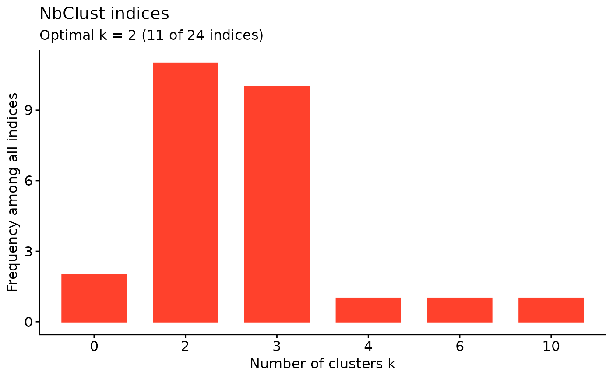

Computes up to 26 indices for determining the number of clusters with
NbClust::NbClust() and visualizes the number of indices that support each
k with factoextra::fviz_nbclust(). The optimal number of clusters is the
one supported by most indices (majority rule).
Usage
seg_nbclust_indices(
x,
cluster_method = c("kmeans", "hclust"),
k_min = 2,
k_max = 10,
index = "all",
hc_method = "ward.D2",
seed = 123
)Arguments
- x
The output of
seg_prep_data()(recommended), or a data frame or numeric matrix with already prepared clustering variables (no missing values).- cluster_method
"kmeans"(default) or"hclust". NbClust does not support PAM.- k_min
Minimum number of clusters to consider. Defaults to 2.
- k_max
Maximum number of clusters to consider. Defaults to 10.
- index
Index computed by NbClust. Defaults to
"all"(26 indices, majority vote). A single index (e.g."silhouette"or"ch") can be given as well; its values per k are plotted then. SeeNbClust::NbClust()for the options.- hc_method
Agglomeration method for
cluster_method = "hclust". Defaults to"ward.D2".- seed
Random seed. The global random seed is left untouched. Defaults to 123.
Value
A list with the elements method, optimal_k, criterion,
values (tibble with the number of indices supporting each k, or with the
index values per k for a single index), plot (ggplot object) and
nbclust (the NbClust::NbClust() output).
Details
How it works
The NbClust package implements many of the indices proposed in the
literature to determine the number of clusters. For each k from k_min to
k_max, the data is clustered and every index is computed. Each index then
proposes its best k according to its own rule (e.g. maximum, minimum or
largest change), and the proposals are counted. The default index = "all"
computes 26 indices: KL, CH, Hartigan, CCC, Scott, Marriot, TrCovW,
TraceW, Friedman, Rubin, Cindex, DB, Silhouette, Duda, PseudoT2, Beale,
Ratkowsky, Ball, PtBiserial, Frey, McClain, Dunn, Hubert, SDindex, Dindex
and SDbw. "alllong" adds Gap, Gamma, Gplus and Tau (much slower).
Most indices compare the dispersion within clusters with the dispersion between clusters, in different ways. Examples:
CH (Calinski-Harabasz, higher is better): ratio of the between- to the within-cluster dispersion, corrected for the number of clusters.
DB (Davies-Bouldin, lower is better): average similarity of each cluster with its most similar other cluster.
Silhouette (higher is better): see
seg_nbclust_silhouette().Duda, PseudoT2, Beale: test whether a cluster should be split into two; these can also suggest k = 1 (no clusters).
See Charrad et al. (2014) for the definitions of all indices.
The Hubert and D index are graphical methods without a direct proposal
(shown as k = 0 in the plot); some indices can fail for a given dataset.
Both are not counted, so the number of votes is often lower than 26.
Proposals outside k_min to k_max (such as k = 1) are not counted for
the optimal k either, but are shown in the plot. The console output and
the plots that NbClust produces itself are suppressed.
With a single index (e.g. "ch" or "silhouette"), there is no vote:
the values of the index per k are plotted instead, and the optimal k is the
best value of that index.
Interpretation
A k supported by a clear majority of the indices is a strong candidate.
Votes spread over several values of k (common for survey data) indicate that the data has no clear cluster structure; consider all values of k with many votes as candidates.
Many indices are biased towards small numbers of clusters, so k = 2 often receives many votes. Also look at the second most supported k.
References
Charrad, M., Ghazzali, N., Boiteau, V. and Niknafs, A. (2014). NbClust: An R Package for Determining the Relevant Number of Clusters in a Data Set. Journal of Statistical Software, 61(6), 1-36. doi:10.18637/jss.v061.i06
See also
Other optimal number of clusters:
seg_nbclust_gap(),
seg_nbclust_silhouette(),
seg_nbclust_wss()
Examples
# \donttest{
prep <- seg_prep_data(iris, vars = -Species, verbose = FALSE)
seg_nbclust_indices(prep)$plot

# }